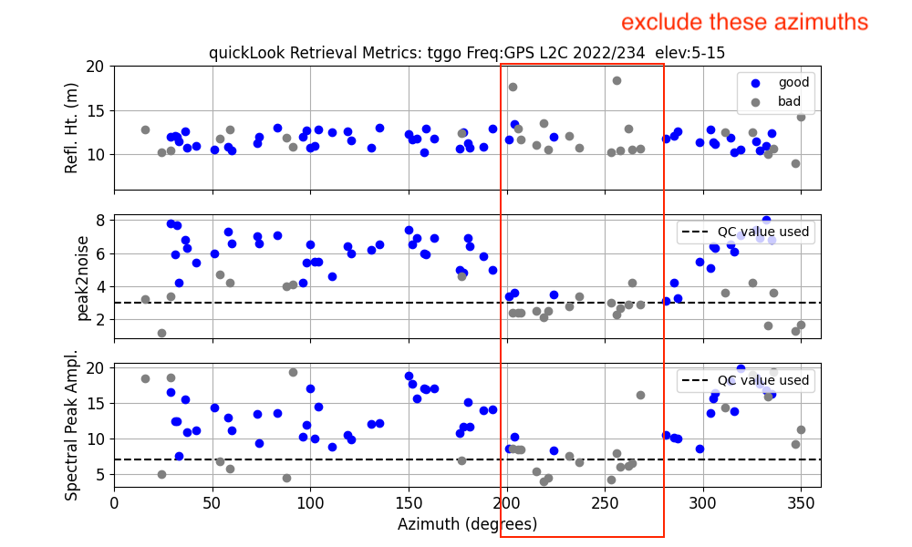
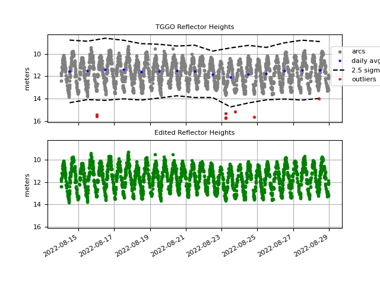

TGGO
Station Name: tggo or TGGO00DEU
Location: Elbe River, Germany
Archives: BFG

TGGO is a station in the BfG-GNSS Monitoring Network. It is located in the Elbe River. It is colocated with a tradtional tide gauge. It has excellent visibility of the water.
Reflection Zones for TGGO
Type tggo into the station name for our reflection zone web site. Generally for water, I recommend using up to 15 degree elevation angles. Note that the height of the GNSS antenna above sea level is returned on the right hand side. We will compare that value with the estimated reflector height. It does look like there might be some kind of pier that we should avoid
Make a SNR file
Because the GNSS station is ~12 meters above the water, we are too close to the L1 Nyquist for a receiver that is sampling at 30 seconds. I recommend using the 15 second files that BFG started producing in summer 2022. Make the following choices:
station tggo00deu (the longer station name will tell the code to find RINEX 3 instead of RINEX 2.11)
archive bfg
orb rapid (you can also use gnss if you prefer)
samplerate 15
rinex2snr tggo00deu 2022 234 -archive bfg -orb rapid -samplerate 15
You will need a password for the BFG archive. This is available upon request by sending an e-mail to gnss@bafg.de.
You will only need to enter the password once as gnssrefl will save it to your local system.
While you can also find TGGO data at SONEL, it will likely be the 30 second data which is not as useful as the 15 second data.
First evaluation of the data for TGGO
I am going to use year 2022 and day of year 234 and frequency 20 (which means L2C). I will further restrict elevation angles to 5-15. In order to see the water, you need to set the reflector height limits to include the vertical distance to the water with the optional parameters h1 and h2.
quickLook tggo 2022 234 -fr 20 -e1 5 -e2 15 -h1 6 -h2 20
The first plot shows periodograms in the four geographic coordinates.

These are summarized below.
{kind=link}
All three plots are with respect to azimuth in degrees. On the top plot, the “blue” retrievals show that the GNSS antenna is indeed ~12 meters above the water. The variation in reflector height (with respect to azimuth) are the tides. I’ve outlined in red the azimuth region that shows consistently rejected retrievals. This roughly corresponds to where we saw the pier in the photograph.
Analyze the data
Go back and make SNR files for a longer time period:
rinex2snr tggo00deu 2022 226 -doy_end 240 -archive bfg -orb rapid -samplerate 15
The next step is to write down your analyis strategy using make_json_input. Since tggo is
included in our global database, you can simply use 0,0,0 for the required a priori station coordinates:
I am using a slightly smaller reflector height zone than I used with quickLook.
make_json_input tggo 0 0 0 -h1 6 -h2 20 -e1 5 -e2 15 -h1 6 -h2 18 -allfreq T
Edit the json file (location is printed to the screen) and remove the azimuth region in the red box above.
Now estimate reflector heights for these same dates:
gnssir tggo 2022 226 -doy_end 240
To put those results all together:
subdaily tggo 2022
Multiple figures come to the screen. The first will summarize how much each constellation contributes. Because of restrictions for this particular receiver type, the Galileo signals are degraded for reflections. When a new receiver is installed, the Galileo retrievals will significantly improve.

The reflector heights are then plotted as a function of constellation (GPS, Glonass, Galileo), azimuth, and amplitude of the reflector height periodogram. These can be useful if you are trying to assess whether your azimuth mask is working.

Time series with large outliers removed.
{kind=link}
Additional corrections can be made using the rhdot T setting. I will add
more information here when I get a chance.
Kristine M. Larson September 9, 2022